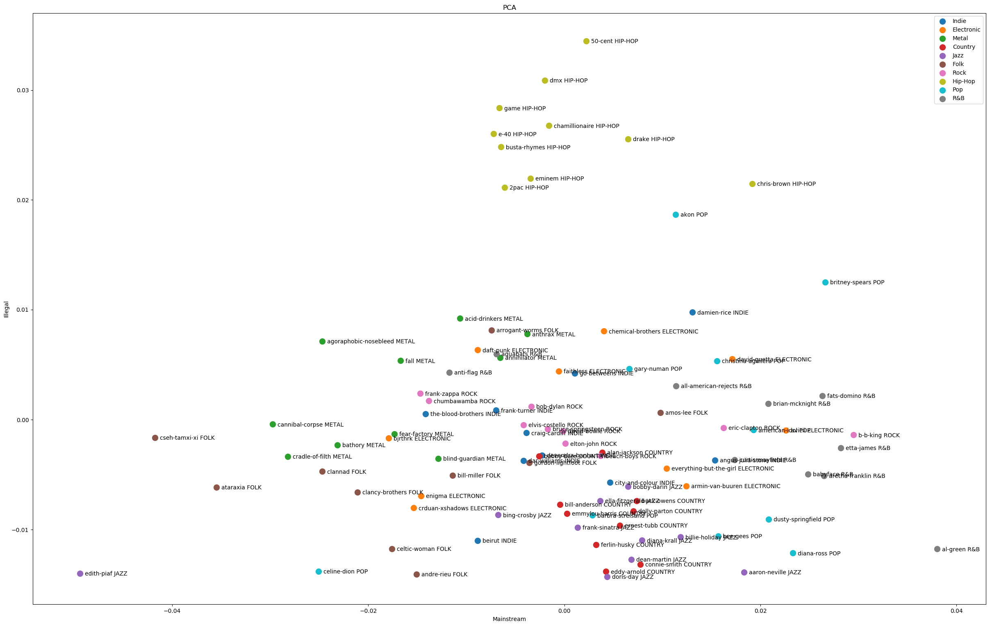

The aim of this lab is to analyse the genre of artists based only
on their song lyrics, which is done using unsupervised machine learning approaches.
An overview with the artists and their genre can be found on a dendrogram here
To calculate the TF IDF Matrix, the lyrics are split into words. Those words include many words that don't add any semantic meaning to the lyrics. These words are called stopwords and were extracted from the text to make sure, that the most frequent words contain meaning. The python natural language toolkit library provides a list of stop words.
When we look at some examples of the 10 most frequent words, there are some similarities between artists from the same genre. At the same time, the most frequent words can be very different, as we can see from the metal genre with bathory and annihilator.
| 50-Cent | Hip-Hop | |||||||||
|---|---|---|---|---|---|---|---|---|---|---|
| Frequency | 0.019160 | 0.015574 | 0.015098 | 0.013911 | 0.011044 | 0.011017 | 0.010379 | 0.008816 | 0.007108 | 0.007081 |
| Words | 'get' | 'nigga' | 'like' | 'got' | 'know' | 'ain't' | 'shit' | 'niggas' | 'see' | 'ya' |
| Eminem | Hip-Hop | |||||||||
| Frequency | 0.015370 | 0.011441 | 0.007853 | 0.007699 | 0.007675 | 0.006965 | 0.006567 | 0.006236 | 0.005665 | 0.005267 |
| Words | 'like' | 'get' | 'got' | 'know' | 'shit' | 'back' | 'ain't' | 'fuck' | 'go' | 'see' |
| Bathory | Metal | |||||||||
| Frequency | 0.007725 | 0.007483 | 0.007483 | 0.006819 | 0.006156 | 0.005673 | 0.005009 | 0.004949 | 0.004888 | 0.004767 |
| Words | 'death' | 'sky' | 'blood' | 'one' | 'fire' | 'black' | 'die' | 'high' | 'high' | 'life' |
| Avicii | Electronic | |||||||||
| Frequency | 0.024273 | 0.021116 | 0.015130 | 0.013606 | 0.013606 | 0.011538 | 0.010884 | 0.010558 | 0.010449 | 0.009796 |
| Words | 'one' | 'love' | 'never' | 'like' | 'get' | 'make' | 'could' | 'need' | 'way' | 'tell' |
Clustering with K-Means is strongly dependent of the first few values of the dataset, as they initialize the different centroids. The most interesting Clusters are the following two:
| 2 | 4 |
|---|---|
| busta-rhymes: HIP-HOP | clannad: FOLK |
| game: HIP-HOP | andre-rieu: FOLK |
| 50-cent: HIP-HOP | ataraxia: FOLK |
| chamillionaire: HIP-HOP | cradle-of-filth: METAL |
| e-40: HIP-HOP | bathory: METAL |
| dmx: HIP-HOP | cannibal-corpse: METAL |
| 2pac: HIP-HOP | clancy-brothers: FOLK |
| drake: HIP-HOP | celtic-woman: FOLK |
| eminem: HIP-HOP | agoraphobic-nosebleed: METAL |
The lyrics of Hip-Hop seem to be extremly different than other genres, as cluster 2 only contains the one genre. Cluster 4 consits of Folk and Metal which concludes that this two genres are very similar to each other in therms of the lyrics.
To be able to visualize the different artists and genres we applied the Principle Component Analysis onto the lyrics. As seen in the previous chapter the Hip-Hop genres is very distinct from the rest of the genres. In contrary to Hip-Hop, Pop spreads very widely. It inherits some properties from most of the genres.
As additional task, we experimented with word vectors for topic extraction.
We again counted the words for each singer and then took the most common few.
For those most fequent words, the then calculated the average vector and seached
for the word, that was closest to this average vector.
For the vectors, we utilized SpaCy with pretrained GloVe vectors.
Additionally, we tried the procedure with different parameters to
get multiple topic-candidates for each artist. In a final steop,
we merged these topics together.
While the topics of some artists, do not make a lot of sense,
some are actually pretty fitting:
"beyonce-knowles": "love, girl"
"eazy-e": "hoe, shit"
"ali-dee-and-the-deekompressors": "race-car, automobile, racer"
"fair-sex": "thing, enough, love, bite"
"babydoll": "baby, flulike, love, fever"
{kind=link}
{kind=link}